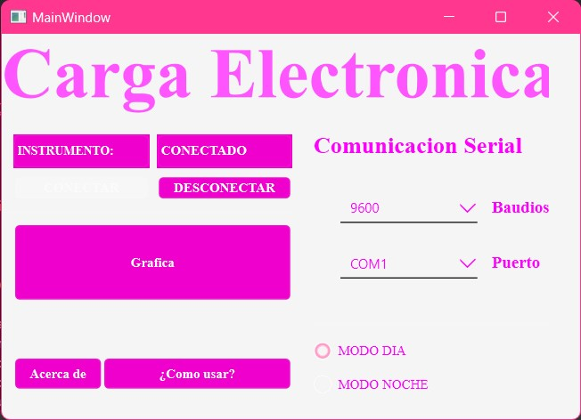
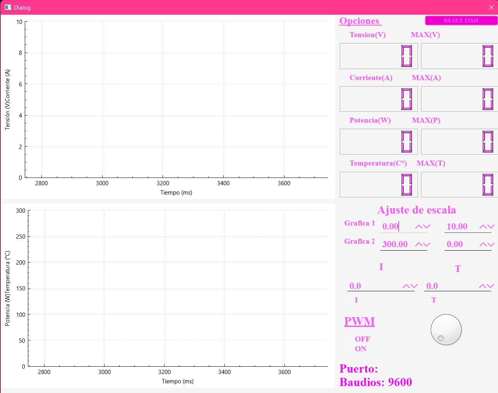

Instrucciones para usar el Instrumento Virtual XYZ
1: Conectar el dispositivo
Conecta el dispositivo la PC mediante el cable USB.
2: Verificar puerto y baudios
La aplicación automáticamente detecta el puerto de comunicación empleado y selecciona 9600 baudios, como se muestra en la imágen a continuación. De no ser asi, corregirlo manualmente. También se puede seleccionar entre "Modo día" para un color de fondo claro y "Modo noche" para que el color de fondo sea oscuro.
3: Conectar el dispositivo
Conecta el dispositivo a la aplicación seleccionando la opción "Conectar". Una vez realizado esto correctamente, se habilitará en pantalla la opción "Gráfica". Clickear con el cursor sobre esta opción.
4: Gráfica
La pantalla de las gráficas posee este formato. En este formato se pueden apreciar dos grillas. Sobre los ejes "Y" se encuentran las unidades de medición y sobre los ejes "X" se encuentran los indicadores de tiempo.
5: Seleccionar parámetros a medir
En el lado derecho de la pantalla podremos seleccionar si presentar en pantalla los datos de "Tensión(V)", "Corriente(A)", "Potencia(W)" y "Temperatura(C)". Se puede presentar cada parámetro de manera individual o simultáneamente. Como se puede apreciar en las imágenes a continuación.
6: Controles de medición.
Por debajo de los displays indicadores de valores, se encuentran los controles para modificar los valores máximos y mínimos de los ejes Y de ambas grillas.
Ejemplo:
7: Reseteo del tiempo
Dado a que el instrumento virtual mide en tiempo real, se puede resetear el tiempo del eje "X" para que vuelva a contar desde 0 en caso de necesitarlo. Esto se puede realizar oprimiendo el botón "RESET TIME" en el extremo superior derecho de la pantalla.
8: Displays de valores
Los displays que muestran los valores de la medición son 8. Hay 2 para "Voltaje", 2 para "Corriente", 2 para "Potencia" y 2 para "Temperatura". Los 4 displays de la izquierda muestran el valor de la medición realizada. Los 4 restantes de la derecha, muestran el valor máximo medido por cada parámetro.
9: Control de PWM por "Dial"
Una de las opciones para controlar los parámetros, es el control por PWM. El mismo puede controlarse de manera "Manual" o forma "Automática". Para activar la opción "Manual", se debe seleccionar la opción "ON" al lado del dial ubicado en el extremo inferior derecho de la pantalla. De esta manera, rotando el dial con el mouse se podrá obtener la señal PWM que se desee. De lo contrario, se coloca en "OFF" y al cálculo de PWM lo hace el instrumento.
10: Control de PWM por corriente, potencia o temperatura
La otra forma de controlar el PWM es mediante los controles de corriente, potencia o temperatura. Se puede preestablecer una corriente o una potencia deseada y el instrumento virtual se encargará de hacer los cálculos necesarios para obtener lo solicitado. También, se puede seleccionar en simultáneo una protección contra sobretemperatura, estableciendo la temperatura máxima deseada y si el dispositivo medido excede, el PWM será 0.
Ejemplo de control de corriente con protección de sobretemperatura: